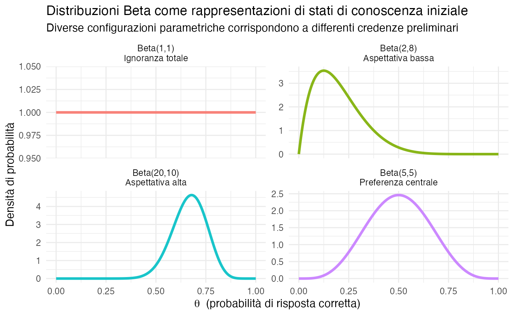
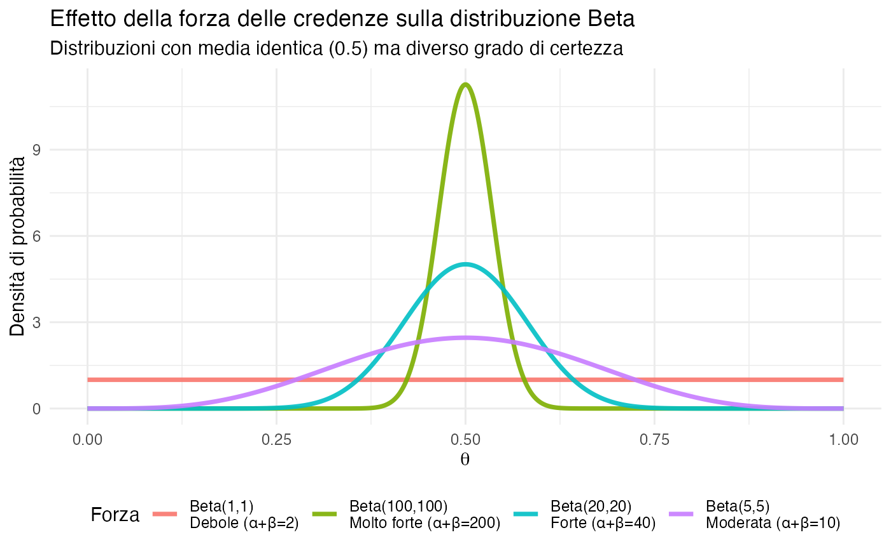
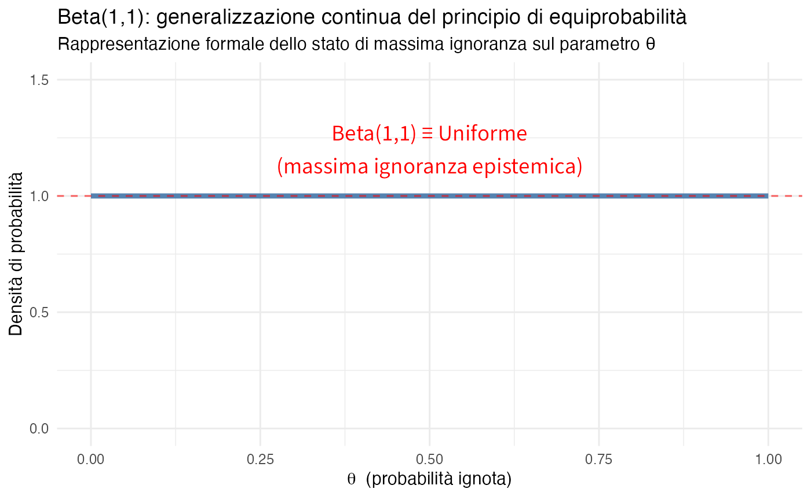
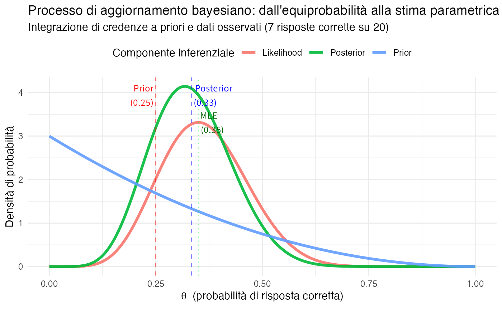
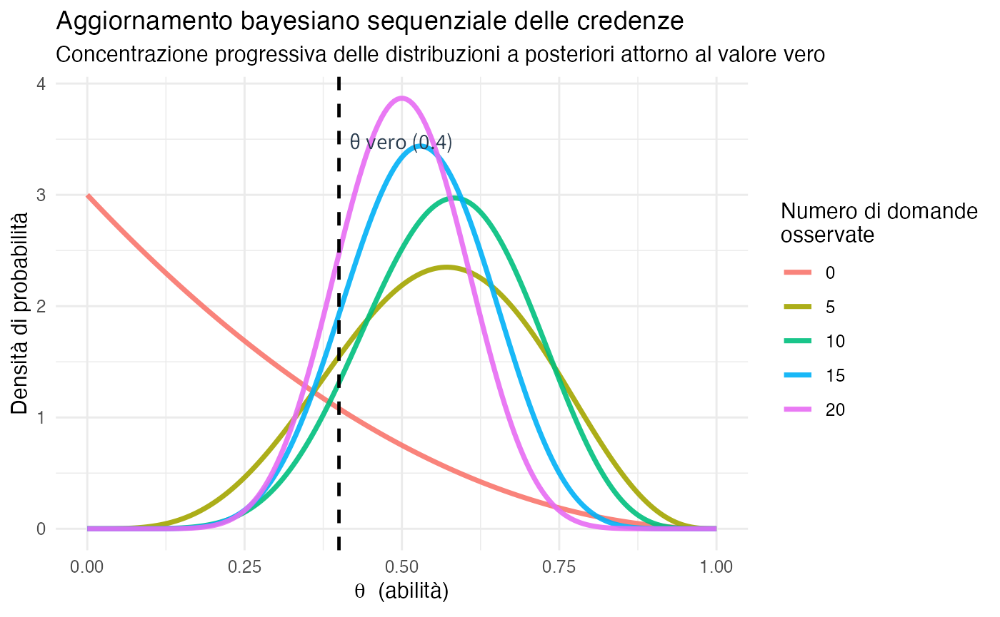
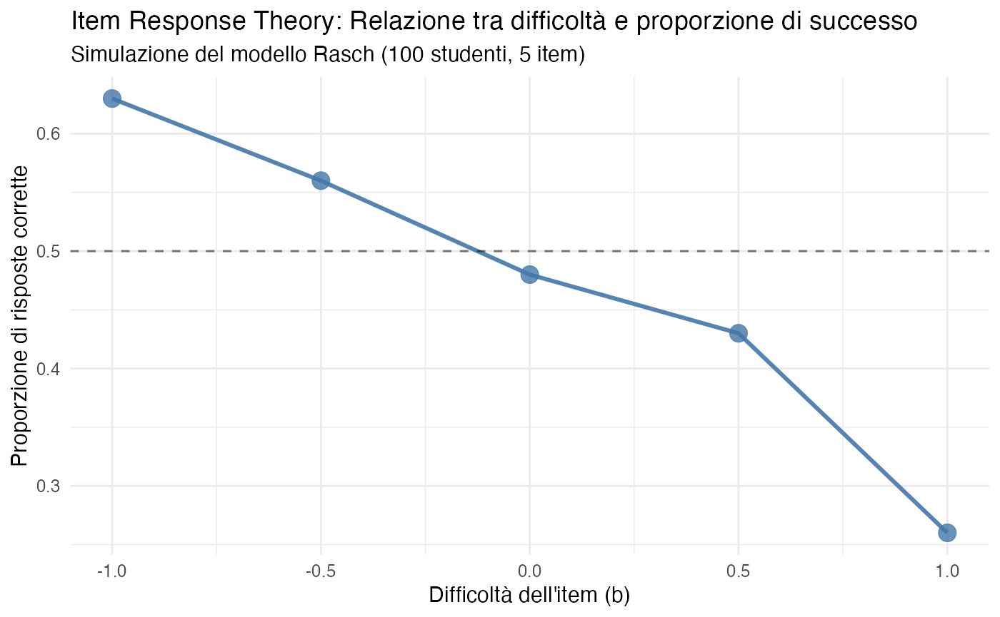
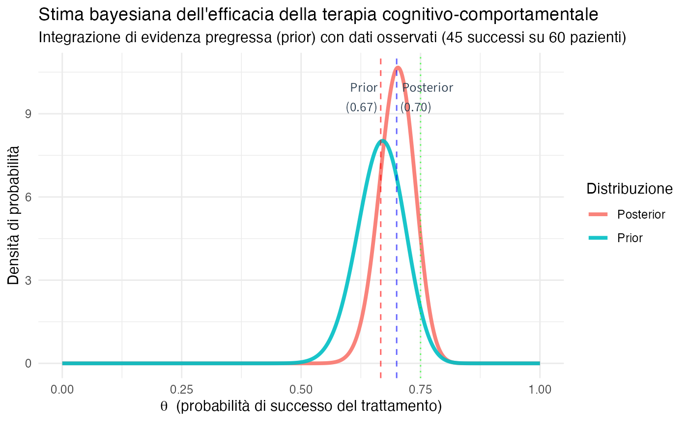
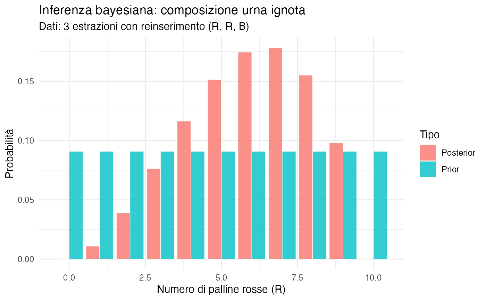

here::here("code", "_common.R") |>
source()
# Load packages
if (!requireNamespace("pacman")) install.packages("pacman")
pacman::p_load(ggplot2, dplyr, tidyr, gtools, combinat, gtools)3 Equiprobabilità e calcolo combinatorio come caso limite
Introduzione
Nei capitoli precedenti abbiamo sviluppato una concezione della probabilità come grado di credenza razionale, in cui gli assiomi rappresentano vincoli di coerenza logica. In questo capitolo, ci poniamo una domanda cruciale: quando è possibile applicare legittimamente la formula classica “casi favorevoli / casi possibili”?
La risposta risiede nel riconoscere che questa formula presuppone implicitamente l’equiprobabilità di tutti i casi possibili. Solo quando ogni esito è ugualmente plausibile, il rapporto tra i casi favorevoli e il totale corrisponde effettivamente alla probabilità dell’evento.
La prospettiva bayesiana fornisce una fondazione precisa per questo approccio: l’equiprobabilità non è una proprietà intrinseca del mondo fisico, ma deriva da uno stato di simmetria epistemica, ovvero dalla nostra mancanza di ragioni per considerare un esito più plausibile di un altro. Questo approccio formalizza il principio di indifferenza (o principio di ragione insufficiente): quando non disponiamo di informazioni che ci permettano di discriminare tra diverse possibilità, assegniamo loro credenze uguali.
In questa luce, il calcolo combinatorio assume un nuovo significato: non costituisce una definizione di probabilità, ma diventa uno strumento di modellazione per elencare le configurazioni in contesti che riteniamo simmetrici.
Tuttavia, quando emergono informazioni asimmetriche, come palline con pesi differenti in un’urna o item di test con diversa difficoltà, l’ipotesi di equiprobabilità viene meno. In questi casi, dobbiamo abbandonare il modello uniforme semplice e passare a modelli parametrici più sofisticati, in grado di catturare le differenze sistematiche tra le alternative.
Panoramica del capitolo
- Il principio di indifferenza e la simmetria epistemica.
- Formula classica come caso speciale bayesiano.
- Calcolo combinatorio come modellazione delle credenze equiprobabili.
- Esempi con urne, carte, dadi interpretati in chiave bayesiana.
- Quando l’equiprobabilità NON si applica.
- Dal discreto al continuo: parametri ignoti e Beta-Binomiale.
- La distribuzione Beta: un’intuizione profonda.
- Applicazioni psicologiche: test, item difficulty, response patterns.
3.1 Il principio di indifferenza (simmetria epistemica)
Definizione 3.1 (Principio di indifferenza) Se, in base alle informazioni di cui disponiamo attualmente, non abbiamo ragioni per distinguere tra \(n\) possibilità mutualmente esclusive ed esaustive, allora è coerente assegnare a ciascuna la stessa credenza \(1/n\).
3.1.1 Fondamento epistemico
Il principio di indifferenza non afferma che gli esiti sono “fisicamente equiprobabili”, ma che la nostra ignoranza è simmetrica. In assenza di informazioni discriminanti, la distribuzione uniforme rappresenta il massimo livello di incertezza (massima entropia).
3.1.2 Quando si applica il principio
Il principio di indifferenza trova giustificazione epistemica in tre condizioni specifiche. La prima condizione riguarda la presenza di simmetria fisica nel sistema oggetto di studio, come nel caso di dadi regolari, monete bilanciate o urne omogenee, in cui le proprietà fisiche garantiscono un’effettiva equivalenza tra gli esiti possibili.
La seconda condizione si verifica in situazioni di ignoranza totale, quando non disponiamo di alcuna informazione rilevante che ci permetterebbe di operare distinzioni tra i diversi esiti considerati. In tali circostanze, l’assegnazione di probabilità uniformi rappresenta l’unica scelta coerente con il nostro stato di conoscenza.
La terza condizione necessaria è l’assenza di una struttura sottostante, ovvero la mancanza di dipendenze note, di pattern sistematici o di relazioni che potrebbero favorire determinati esiti rispetto ad altri. Quando non emergono elementi che suggeriscono l’esistenza di tali strutture latenti, il principio di indifferenza rappresenta un approccio ragionevole per l’assegnazione delle probabilità iniziali.
3.2 La formula classica come caso particolare dell’equiprobabilità
Quando accettiamo il principio di indifferenza per uno spazio campionario finito, la formula classica della probabilità emerge come conseguenza logica e matematica.
Teorema 3.1 (La formula classica nella prospettiva bayesiana) Consideriamo uno spazio campionario finito \(\Omega = \{\omega_1, \omega_2, \ldots, \omega_n\}\) in cui, per simmetria epistemica, assegniamo a ogni esito elementare la stessa probabilità: \(P(\omega_i) = \frac{1}{n}\) per ogni \(i = 1, \ldots, n\).
Allora, per qualsiasi evento \(A \subseteq \Omega\), la probabilità è data da:
\[ P(A) = \frac{|A|}{|\Omega|} = \frac{\text{numero di esiti favorevoli}}{\text{numero totale di esiti possibili}}. \]
Dimostrazione: Per l’assioma di additività degli eventi disgiunti: \[ P(A) = \sum_{\omega_i \in A} P(\omega_i) = \sum_{\omega_i \in A} \frac{1}{n} = |A| \cdot \frac{1}{n} = \frac{|A|}{n} = \frac{|A|}{|\Omega|}. \]
Nota fondamentale: La validità di questa formula dipende criticamente dall’ipotesi di equiprobabilità degli esiti elementari.
3.2.1 Una conseguenza, non una definizione
È fondamentale riconoscere che la formula classica “casi favorevoli diviso casi possibili” non costituisce una definizione del concetto di probabilità, bensì rappresenta una conseguenza matematica della teoria probabilistica che risulta valida esclusivamente sotto condizioni specifiche e circoscritte.
Questa formula emerge naturalmente dall’interazione sinergica di tre componenti fondamentali. In primo luogo, gli assiomi di coerenza garantiscono la consistenza logica formale delle nostre assegnazioni probabilistiche. In secondo luogo, il principio di indifferenza introduce un’assunzione epistemica concernente la simmetria delle nostre credenze preliminari rispetto ai diversi esiti possibili. Infine, il calcolo combinatorio fornisce lo strumento operativo per enumerare sistematicamente le configurazioni che vengono considerate equiprobabili.
La validità della formula classica risulta quindi condizionata criticamente all’appropriatezza dell’assunzione di equiprobabilità. Quando questa assunzione non risulta giustificata dal nostro stato informativo—ovvero quando disponiamo di evidenza che contraddice la simmetria epistemica—la formula classica perde il suo fondamento logico e deve essere necessariamente sostituita da modelli probabilistici più sofisticati in grado di incorporare le asimmetrie informative disponibili.
3.3 Calcolo combinatorio come modellazione bayesiana
3.3.1 Un cambio di prospettiva
Nella trattazione classica della probabilità, il calcolo combinatorio viene solitamente presentato come una “tecnica di conteggio” neutrale e puramente operativa. La prospettiva bayesiana introduce invece un cambiamento epistemologico fondamentale: ogni formula combinatoria rappresenta l’implementazione di un modello specifico di credenze equiprobabili su un particolare tipo di configurazione.
Quando applichiamo il calcolo combinatorio a contesti probabilistici, operiamo implicitamente una serie di assunzioni epistemologiche precise. In primo luogo, identifichiamo uno spazio di configurazioni che riteniamo rilevante per il problema in esame, definendo così l’insieme delle possibilità ammissibili. In secondo luogo, si assume l’esistenza di una simmetria epistemica su tale spazio, postulando che tutte le configurazioni identificate siano ugualmente credibili, date le informazioni attuali. Infine, procediamo all’enumerazione sistematica delle configurazioni per calcolare probabilità coerenti con questa assunzione di simmetria.
Questa riconcettualizzazione trasforma il calcolo combinatorio da mero strumento computazionale a componente integrante di un più ampio framework epistemico, in cui le scelte combinatorie riflettono precise posizioni riguardo alla struttura delle credenze preliminari.
3.3.2 Principio della somma (prospettiva bayesiana)
Il principio della somma corrisponde alla regola di additività per eventi disgiunti nel calcolo delle probabilità. Quando uno spazio può essere partizionato in categorie mutualmente esclusive, le nostre credenze si distribuiscono additivamente tra queste categorie.
\[ n_{\text{totale}} = n_1 + n_2 + \dots + n_k. \]
Interpretazione bayesiana: Se dobbiamo scegliere tra alternative che appartengono a categorie disgiunte, e assegniamo equiprobabilità all’interno di ciascuna categoria, allora il numero totale di configurazioni che consideriamo ugualmente plausibili è la somma delle configurazioni in ciascuna categoria.
Esempio psicologico: scelta di trattamenti
Immaginiamo che un paziente debba scegliere un protocollo terapeutico tra tre categorie mutualmente esclusive:
- Categoria A (terapie cognitive): 8 protocolli diversi;
- Categoria B (terapie comportamentali): 6 protocolli diversi;
- Categoria C (terapie integrate): 10 protocolli diversi.
Se non disponiamo di informazioni che favoriscano un protocollo rispetto agli altri (principio di indifferenza), il numero totale di opzioni equiprobabili è:
\[ n_{\text{totale}} = 8 + 6 + 10 = 24. \]
La probabilità di scegliere un protocollo specifico, sotto l’ipotesi di equiprobabilità, è quindi \(1/24\).
# Calcolo delle probabilità per la scelta di trattamenti
A <- 8 # Terapie cognitive
B <- 6 # Terapie comportamentali
C <- 10 # Terapie integrate
n_totale <- A + B + C
cat("ANALISI DELLE OPZIONI TERAPEUTICHE\n")
#> ANALISI DELLE OPZIONI TERAPEUTICHE
cat("===================================\n")
#> ===================================
cat("Numero totale di protocolli disponibili:", n_totale, "\n")
#> Numero totale di protocolli disponibili: 24
cat("Probabilità di ciascun protocollo (equiprobabilità):", round(1/n_totale, 4), "\n")
#> Probabilità di ciascun protocollo (equiprobabilità): 0.0417
cat("\nPROBABILITÀ PER CATEGORIA:\n")
#>
#> PROBABILITÀ PER CATEGORIA:
cat("Terapie cognitive (A):", round(A/n_totale, 3), "\n")
#> Terapie cognitive (A): 0.333
cat("Terapie comportamentali (B):", round(B/n_totale, 3), "\n")
#> Terapie comportamentali (B): 0.25
cat("Terapie integrate (C):", round(C/n_totale, 3), "\n")
#> Terapie integrate (C): 0.417
cat("\nVerifica coerenza (somma = 1):", round((A + B + C)/n_totale, 3))
#>
#> Verifica coerenza (somma = 1): 1Interpretazione clinica:
- ogni protocollo ha la stessa plausibilità a priori (4.17%);
- le terapie integrate sono collettivamente più probabili (41.7%) perché offrono più opzioni;
- questo modello è appropriato solo se non abbiamo informazioni sulla compatibilità tra paziente e approccio terapeutico.
3.3.3 Principio del prodotto (prospettiva bayesiana)
Il principio del prodotto si applica quando dobbiamo fare scelte sequenziali indipendenti. Dal punto di vista bayesiano, questo principio corrisponde alla moltiplicazione delle probabilità per eventi considerati indipendenti nel nostro stato di conoscenza:
\[ n_{\text{totale}} = n_1 \times n_2 \times \dots \times n_k. \]
Interpretazione bayesiana: Se dobbiamo effettuare \(k\) scelte successive e indipendenti, e per ciascuna scelta abbiamo \(n_i\) opzioni che consideriamo ugualmente plausibili, allora il numero totale di sequenze equiprobabili è dato dal prodotto delle opzioni disponibili a ogni passo.
Esempio psicologico: progettazione di uno studio longitudinale
Immaginiamo di progettare uno studio longitudinale che richiede tre decisioni sequenziali.
-
Fase 1: Selezione del metodo di assessment
(3 opzioni: intervista clinica, questionario standardizzato, osservazione diretta). -
Fase 2: Scelta della frequenza di misurazione
(4 opzioni: settimanale, bisettimanale, mensile, bimestrale). -
Fase 3: Decisione sulla durata del follow-up
(2 opzioni: breve termine [6 mesi], lungo termine [12 mesi]).
Se non abbiamo informazioni che favoriscano opzioni specifiche (simmetria epistemica), il numero totale di design considerati ugualmente plausibili è:
\[ n_{\text{totale}} = 3 \times 4 \times 2 = 24. \]
# Calcolo delle combinazioni per il design dello studio
metodi_assessment <- 3
frequenze <- 4
follow_up <- 2
n_design <- metodi_assessment * frequenze * follow_up
cat("ANALISI DEI DESIGN DI STUDIO POSSIBILI\n")
#> ANALISI DEI DESIGN DI STUDIO POSSIBILI
cat("======================================\n")
#> ======================================
cat("Metodi di assessment disponibili:", metodi_assessment, "\n")
#> Metodi di assessment disponibili: 3
cat("Frequenze di misurazione:", frequenze, "\n")
#> Frequenze di misurazione: 4
cat("Opzioni di follow-up:", follow_up, "\n")
#> Opzioni di follow-up: 2
cat("\nNumero totale di design possibili:", n_design, "\n")
#>
#> Numero totale di design possibili: 24
cat("Probabilità di ciascun design specifico:", round(1/n_design, 4), "\n")
#> Probabilità di ciascun design specifico: 0.0417
cat("\nEsempio: probabilità di 'intervista + settimanale + lungo termine':",
round(1/n_design, 4))
#>
#> Esempio: probabilità di 'intervista + settimanale + lungo termine': 0.0417Condizione cruciale per l’applicabilità: l’equiprobabilità di tutte le 24 combinazioni vale solo se consideriamo le tre scelte come indipendenti e non abbiamo informazioni che suggeriscano preferenze tra le opzioni.
Situazione realistica: se la letteratura ci indica che le misurazioni settimanali sono più accurate per certi fenomeni psicologici, o che certi metodi di assessment sono più appropriati per specifiche popolazioni, dovremmo revisionare le nostre credenze e abbandonare il modello equiprobabile a favore di una distribuzione più informata.
3.3.4 Permutazioni: ordinamenti equiprobabili
Le permutazioni rappresentano l’insieme completo dei possibili ordinamenti di \(n\) oggetti distinti. Dal punto di vista bayesiano, questa nozione implica l’assunzione che ogni possibile sequenza ordinata sia a priori ugualmente credibile:
\[ P_n = n! = n \times (n-1) \times (n-2) \times \dots \times 2 \times 1. \tag{3.1}\]
Intuizione della formula. Consideriamo \(n\) elementi distinti da disporre in sequenza. La scelta del primo elemento può avvenire in \(n\) modi differenti. Una volta selezionato il primo elemento, rimangono \(n-1\) possibilità per il secondo. Il terzo elemento avrà a disposizione \(n-2\) opzioni, e così via fino all’ultimo elemento che avrà una sola collocazione possibile. Applicando il principio del prodotto, si ottiene l’equazione Equazione 3.1.
Interpretazione bayesiana: quando dobbiamo ordinare \(n\) elementi in assenza di informazioni che favoriscano sequenze specifiche, ciascuna delle \(n!\) permutazioni possiede la medesima credibilità iniziale, pari a \(1/n!\).
# Esempio: parole in esperimento di memoria
parole <- c("Tavolo", "Fiore", "Automobile", "Stella", "Libro")
# Numero di permutazioni
n_perm <- factorial(length(parole))
cat("ANALISI DELLE PERMUTAZIONI PER ESPERIMENTO DI MEMORIA\n")
#> ANALISI DELLE PERMUTAZIONI PER ESPERIMENTO DI MEMORIA
cat("=====================================================\n")
#> =====================================================
cat("Parole utilizzate:", paste(parole, collapse = ", "), "\n")
#> Parole utilizzate: Tavolo, Fiore, Automobile, Stella, Libro
cat("Numero totale di ordini possibili:", n_perm, "\n")
#> Numero totale di ordini possibili: 120
cat("Probabilità di ciascun ordine specifico:", round(1/n_perm, 5), "\n\n")
#> Probabilità di ciascun ordine specifico: 0.00833
# Generiamo alcune permutazioni casuali
set.seed(123)
cat("ESEMPI DI SEQUENZE EQUIPROBABILI:\n")
#> ESEMPI DI SEQUENZE EQUIPROBABILI:
for(i in 1:3) {
cat("Sequenza", i, ": ", paste(sample(parole), collapse = " → "), "\n")
}
#> Sequenza 1 : Automobile → Fiore → Libro → Stella → Tavolo
#> Sequenza 2 : Automobile → Tavolo → Fiore → Libro → Stella
#> Sequenza 3 : Fiore → Automobile → Tavolo → Stella → LibroSignificato metodologico: nella ricerca psicologica, la procedura di randomizzazione degli ordini di presentazione implementa operativamente il principio bayesiano di indifferenza. Questo approccio metodologico garantisce che il disegno sperimentale non introduca distorsioni sistematiche e favorisce l’elaborazione di interpretazioni causali più robuste.
3.3.5 Disposizioni: selezioni ordinate equiprobabili
Le disposizioni (denominate anche permutazioni parziali) rappresentano il numero di modi per scegliere e ordinare \(k\) oggetti da un insieme di \(n\) oggetti. Dal punto di vista bayesiano, questa nozione implica l’assunzione di equiprobabilità su tutte le possibili sequenze ordinate di lunghezza \(k\).
\[ D_{n,k} = \frac{n!}{(n-k)!} = n \times (n-1) \times \cdots \times (n-k+1). \tag{3.2}\]
Intuizione della formula. Si consideri il processo di formazione di una sequenza ordinata composta da \(k\) elementi selezionati da un insieme di \(n\) oggetti distinti. Questo processo si sviluppa attraverso \(k\) passi sequenziali. Nel primo passo, la scelta del primo elemento presenta \(n\) possibilità distinte. Nel secondo passo, la scelta del secondo elemento offre \(n-1\) opzioni residue. Il terzo passo prevede \(n-2\) opzioni, e questa progressione decrescente continua fino al \(k\)-esimo passo, in cui rimangono \(n-k+1\) possibilità.
Il prodotto delle scelte disponibili a ogni passo conduce alla formula: \[ D_{n,k} = n \times (n-1) \times (n-2) \times \dots \times (n-k+1). \]
Questa espressione equivale concettualmente a interrompere il fattoriale di \(n\) dopo \(k\) fattori. Formalmente, essa corrisponde alla divisione di \(n!\) per il fattoriale degli elementi non selezionati \((n-k)!\), come illustrato nell’equazione Equazione 3.2.
Interpretazione bayesiana: quando dobbiamo selezionare \(k\) elementi da \(n\) in sequenza senza reinserimento, e l’ordine di selezione risulta rilevante, ciascuna possibile sequenza possiede una credibilità iniziale pari a \(1/D_{n,k}\).
# Partecipanti
partecipanti <- paste0("P", 1:8)
# Numero di disposizioni (3 ruoli da 8 persone, ordine conta)
n <- length(partecipanti)
k <- 3
n_disp <- factorial(n) / factorial(n - k)
cat("ANALISI DELLE DISPOSIZIONI PER ASSEGNAZIONE DI RUOLI\n")
#> ANALISI DELLE DISPOSIZIONI PER ASSEGNAZIONE DI RUOLI
cat("===================================================\n")
#> ===================================================
cat("Numero di partecipanti:", n, "\n")
#> Numero di partecipanti: 8
cat("Numero di ruoli da assegnare:", k, "\n")
#> Numero di ruoli da assegnare: 3
cat("Numero di assegnazioni possibili:", n_disp, "\n")
#> Numero di assegnazioni possibili: 336
cat("Probabilità di ciascuna assegnazione specifica:", round(1/n_disp, 5), "\n\n")
#> Probabilità di ciascuna assegnazione specifica: 0.00298
# Generiamo alcune assegnazioni casuali
set.seed(456)
ruoli <- c("Facilitatore", "Osservatore", "Timekeeper")
cat("ESEMPI DI ASSEGNAZIONI EQUIPROBABILI:\n")
#> ESEMPI DI ASSEGNAZIONI EQUIPROBABILI:
for(i in 1:3) {
selezione <- sample(partecipanti, k, replace = FALSE)
assegnazione <- paste(ruoli, "=", selezione, collapse = ", ")
cat("Assegnazione", i, ": ", assegnazione, "\n")
}
#> Assegnazione 1 : Facilitatore = P5, Osservatore = P8, Timekeeper = P3
#> Assegnazione 2 : Facilitatore = P6, Osservatore = P5, Timekeeper = P4
#> Assegnazione 3 : Facilitatore = P3, Osservatore = P1, Timekeeper = P6Insight bayesiano: l’applicazione del modello delle disposizioni presuppone il soddisfacimento di due condizioni fondamentali: la rilevanza dell’ordine o della specificità dei ruoli, e l’equivalenza a priori di tutte le possibili assegnazioni. Quando una di queste condizioni non risulta verificata, a causa di informazioni aggiuntive o di caratteristiche contestuali, diventa necessario modificare il modello probabilistico per incorporare adeguatamente queste complessità.
3.3.6 Combinazioni: selezioni non ordinate equiprobabili
Le combinazioni rappresentano il numero di modi per selezionare \(k\) oggetti da un insieme di \(n\) elementi quando l’ordine non conta. Dal punto di vista bayesiano, questa nozione implica l’assunzione che ogni possibile sottoinsieme di dimensione \(k\) abbia la stessa credibilità iniziale:
\[ C_{n,k} = \binom{n}{k} = \frac{n!}{k!(n-k)!}. \tag{3.3}\]
Intuizione della formula. Si consideri il processo di formazione di gruppi composti da \(k\) elementi selezionati da un insieme di \(n\), in cui l’ordine di selezione non è rilevante.
Se contassimo le sequenze ordinate (disposizioni), noteremmo che il primo elemento offre \(n\) opzioni, il secondo \(n-1\), e così via fino al \(k\)-esimo elemento, che offre \(n-k+1\) possibilità. Il numero totale di sequenze ordinate risulterebbe dunque:
\[ D_{n,k} = n \times (n-1) \times \dots \times (n-k+1). \]
Tuttavia, nella prospettiva delle combinazioni, l’ordine non è rilevante: il gruppo {A, B} è equivalente al gruppo {B, A}.
Ogni gruppo di \(k\) elementi appare replicato in tutte le sue possibili permutazioni, che ammontano esattamente a \(k!\). Per ottenere il numero di gruppi distinti, ovvero eliminando le ripetizioni dovute alle differenti ordinazioni, è necessario dividere per \(k!\):
\[ C_{n,k} = \frac{D_{n,k}}{k!} = \frac{n \times (n-1) \times \dots \times (n-k+1)}{k!}. \]
Questa espressione coincide esattamente con la formula delle combinazioni presentata nell’equazione Equazione 3.3.
Interpretazione bayesiana: quando dobbiamo costituire gruppi di \(k\) elementi selezionati da \(n\), e non disponiamo di informazioni che favoriscano composizioni specifiche, ciascun gruppo possiede una credibilità iniziale pari a \(1/\binom{n}{k}\).
# Volontari per peer counseling
volontari <- paste0("V", 1:12)
# Numero di coppie possibili
n_volontari <- length(volontari)
n_coppie <- choose(n_volontari, 2)
cat("ANALISI DELLE COMBINAZIONI PER FORMAZIONE DI COPPIE\n")
#> ANALISI DELLE COMBINAZIONI PER FORMAZIONE DI COPPIE
cat("===================================================\n")
#> ===================================================
cat("Numero di volontari:", n_volontari, "\n")
#> Numero di volontari: 12
cat("Numero di coppie possibili:", n_coppie, "\n")
#> Numero di coppie possibili: 66
cat("Probabilità di ciascuna coppia specifica:", round(1/n_coppie, 4), "\n\n")
#> Probabilità di ciascuna coppia specifica: 0.0152
# Generiamo alcune coppie casuali usando combinazioni
set.seed(789)
tutte_coppie <- combinations(n = n_volontari, r = 2, v = volontari)
cat("ESEMPI DI COPPIE EQUIPROBABILI:\n")
#> ESEMPI DI COPPIE EQUIPROBABILI:
for(i in 1:5) {
cat("Coppia", i, ": (", tutte_coppie[i,1], ",", tutte_coppie[i,2], ")\n")
}
#> Coppia 1 : ( V1 , V10 )
#> Coppia 2 : ( V1 , V11 )
#> Coppia 3 : ( V1 , V12 )
#> Coppia 4 : ( V1 , V2 )
#> Coppia 5 : ( V1 , V3 )
# Verifica
cat("\nVerifica - Totale coppie uniche generate:", nrow(tutte_coppie))
#>
#> Verifica - Totale coppie uniche generate: 66Lezione bayesiana fondamentale: il modello delle combinazioni rappresenta una formalizzazione dell’ignoranza simmetrica riguardo alla composizione dei gruppi. Quando questa condizione di ignoranza viene meno, in seguito all’acquisizione di informazioni sulle relazioni interpersonali, sulle competenze complementari o su altri fattori rilevanti, diventa necessario abbandonare il modello uniforme a favore di un approccio parametrico, in grado di riflettere adeguatamente la struttura delle conoscenze disponibili.
3.3.7 Sintesi: quando usare ciascun metodo
Dal punto di vista bayesiano, la scelta tra permutazioni, disposizioni e combinazioni riflette quali aspetti del problema consideriamo rilevanti e su quali assumiamo simmetria epistemica.
| Metodo | Ordine rilevante? | Modello bayesiano | Formula | Esempio psicologico |
|---|---|---|---|---|
| Permutazioni | Importante | Tutti gli ordinamenti completi di \(n\) elementi sono ugualmente plausibili | \(n!\) | Ordine di presentazione di \(n\) stimoli in un esperimento |
| Disposizioni | Importante | Tutte le sequenze ordinate di \(k\) elementi (scelti da \(n\)) sono ugualmente plausibili | \(\frac{n!}{(n-k)!}\) | Assegnazione di \(k\) compiti specifici a \(n\) partecipanti |
| Combinazioni | Irrilevante | Tutti i sottoinsiemi di \(k\) elementi (scelti da \(n\)) sono ugualmente plausibili | \(\binom{n}{k}\) | Selezione di \(k\) partecipanti per un gruppo terapeutico |
3.4 Quando l’equiprobabilità NON si applica
Il principio di indifferenza decade quando si dispone di informazioni asimmetriche che ci permettono di distinguere tra le diverse possibilità. In psicologia e nelle scienze del comportamento, questa situazione è la regola piuttosto che l’eccezione.
3.4.1 Esempio 1: palline con pesi diversi
# Urna con 3 palline: A (leggera), B (media), C (pesante)
# Le probabilità di estrazione sono proporzionali ai pesi
pesi <- c(A = 1, B = 2, C = 3)
prob_corrette <- pesi / sum(pesi) # Normalizziamo per ottenere probabilità
cat("DISTRIBUZIONE CORRETTA (considerando i pesi)\n")
#> DISTRIBUZIONE CORRETTA (considerando i pesi)
cat("===========================================\n")
#> ===========================================
for(i in 1:3) {
cat(names(pesi)[i], ": peso =", pesi[i], "→ prob =", round(prob_corrette[i], 3), "\n")
}
#> A : peso = 1 → prob = 0.167
#> B : peso = 2 → prob = 0.333
#> C : peso = 3 → prob = 0.5
cat("\nDISTRIBUZIONE ERRATA (ignorando i pesi)\n")
#>
#> DISTRIBUZIONE ERRATA (ignorando i pesi)
cat("=======================================\n")
#> =======================================
prob_equiprobabili <- rep(1/3, 3)
names(prob_equiprobabili) <- names(pesi)
print(round(prob_equiprobabili, 3))
#> A B C
#> 0.333 0.333 0.333
# Simulazione per verificare il modello corretto
set.seed(123)
n_sim <- 10000
estrazioni <- sample(names(pesi), size = n_sim, replace = TRUE, prob = prob_corrette)
freq_sim <- table(estrazioni) / n_sim
cat("\nVERIFICA EMPIRICA (", n_sim, "estrazioni simulate)\n")
#>
#> VERIFICA EMPIRICA ( 10000 estrazioni simulate)
cat("================================================\n")
#> ================================================
print(round(freq_sim, 3))
#> estrazioni
#> A B C
#> 0.162 0.333 0.506Interpretazione bayesiana: se sappiamo che i pesi sono diversi, applicare l’equiprobabilità sarebbe incoerente con il nostro stato di informazione. Le nostre credenze devono necessariamente riflettere le asimmetrie che conosciamo.
Conseguenza pratica: in questo caso, la pallina \(C\) ha una probabilità di estrazione tripla rispetto alla pallina \(A\) (0.5 vs 0.167), nonostante tutte e tre siano ugualmente “possibili” in senso fisico.
3.4.2 Esempio 2: item di un test con difficoltà variabile
In psicometria, gli item di un test presentano tipicamente diversi livelli di difficoltà. Assumere che tutte le domande siano ugualmente facili sarebbe un grave errore di modellazione.
# 5 item con probabilità di risposta corretta realisticamente variabili
item_difficolta <- c(
Item1 = 0.9, # Molto facile
Item2 = 0.7, # Facile
Item3 = 0.5, # Difficoltà media
Item4 = 0.3, # Difficile
Item5 = 0.1 # Molto difficile
)
cat("PROFILO DI DIFFICOLTÀ DEGLI ITEM\n")
#> PROFILO DI DIFFICOLTÀ DEGLI ITEM
cat("================================\n")
#> ================================
for(i in 1:5) {
cat(names(item_difficolta)[i], ": P(corretta) =", item_difficolta[i], "\n")
}
#> Item1 : P(corretta) = 0.9
#> Item2 : P(corretta) = 0.7
#> Item3 : P(corretta) = 0.5
#> Item4 : P(corretta) = 0.3
#> Item5 : P(corretta) = 0.1
# Simulare le risposte di studenti con abilità media
set.seed(123)
n_studenti <- 1000
risposte <- matrix(nrow = n_studenti, ncol = 5)
for (studente in 1:n_studenti) {
risposte[studente, ] <- rbinom(5, size = 1, prob = item_difficolta)
}
# Calcolare la frequenza empirica di risposte corrette
freq_empiriche <- colMeans(risposte)
cat("\nRISULTATI DELLA SIMULAZIONE (", n_studenti, "studenti)\n")
#>
#> RISULTATI DELLA SIMULAZIONE ( 1000 studenti)
cat("==================================================\n")
#> ==================================================
print(round(freq_empiriche, 3))
#> [1] 0.890 0.711 0.479 0.287 0.098
# Confronto con l'assunzione ingenua di equiprobabilità
cat("\nCONFRONTO CON MODELLO INGENUO\n")
#>
#> CONFRONTO CON MODELLO INGENUO
cat("=============================\n")
#> =============================
cat("Equiprobabilità (modello errato): P(corretta) = 0.5 per ogni item\n")
#> Equiprobabilità (modello errato): P(corretta) = 0.5 per ogni item
cat("Differenza media:", round(mean(abs(freq_empiriche - 0.5)), 3), "\n")
#> Differenza media: 0.247Interpretazione bayesiana: in ambito psicometrico, l’assunzione di equiprobabilità risulta quasi sistematicamente inappropriata. Il modello ingenuo che attribuisce una probabilità di risposta corretta P(corretta) = 0.5 a tutti gli item comporta distorsioni metodologicamente rilevanti. Questo approccio porta a una sottostima sostanziale della performance relativa agli item facili, come evidenziato dal confronto tra il valore empirico di 0.9 per l’Item1 e l’assunzione uniforme di 0.5, e a una sovrastima drammatica della performance sugli item difficili, come dimostrato dal caso dell’Item5, dove il valore osservato di 0.1 contrasta nettamente con l’assunzione di equiprobabilità. Inoltre, questo modello trascura completamente la complessa struttura psicometrica sottostante al test, ignorando le differenze sistematiche di difficoltà tra gli item.
Conseguenza metodologica: questa evidenza rende necessario l’utilizzo di modelli parametrici sofisticati, come quelli sviluppati nell’ambito della teoria della risposta all’item. Questi modelli permettono di stimare la difficoltà specifica di ciascun item, di modellare l’abilità degli studenti in modo differenziato e di incorporare sistematicamente le asimmetrie informative che emergono dall’osservazione empirica, superando i limiti fondamentali dell’approccio equiprobabilistico.
3.4.3 Esempio 3: estrazioni dipendenti senza reinserimento
Quando le estrazioni avvengono senza reinserimento, i risultati successivi dipendono da quelli precedenti, creando vincoli strutturali che violano l’equiprobabilità delle sequenze.
# Confronto tra estrazioni con e senza reinserimento
set.seed(123)
n_sim <- 5000
# Scenario A: CON reinserimento (eventi indipendenti)
risultati_indip <- replicate(n_sim, {
sample(c("R", "B"), size = 2, replace = TRUE, prob = c(0.5, 0.5))
})
# Scenario B: SENZA reinserimento (eventi dipendenti)
risultati_dip <- replicate(n_sim, {
sample(c("R", "B"), size = 2, replace = FALSE)
})
# Analisi delle coppie possibili
conta_indip <- table(paste0(risultati_indip[1, ], risultati_indip[2, ]))
conta_dip <- table(paste0(risultati_dip[1, ], risultati_dip[2, ]))
cat("DISTRIBUZIONE DELLE COPPIE - CONFRONTO\n")
#> DISTRIBUZIONE DELLE COPPIE - CONFRONTO
cat("=====================================\n")
#> =====================================
cat("CON REINSERIMENTO (eventi indipendenti):\n")
#> CON REINSERIMENTO (eventi indipendenti):
cat("----------------------------------------\n")
#> ----------------------------------------
distrib_indip <- round(conta_indip / n_sim, 3)
for(coppia in c("RR", "RB", "BR", "BB")) {
if(coppia %in% names(distrib_indip)) {
cat(coppia, ":", distrib_indip[coppia], "\n")
} else {
cat(coppia, ": 0.000\n")
}
}
#> RR : 0.239
#> RB : 0.259
#> BR : 0.252
#> BB : 0.25
cat("\nSENZA REINSERIMENTO (eventi dipendenti):\n")
#>
#> SENZA REINSERIMENTO (eventi dipendenti):
cat("----------------------------------------\n")
#> ----------------------------------------
distrib_dip <- round(conta_dip / n_sim, 3)
for(coppia in c("RR", "RB", "BR", "BB")) {
if(coppia %in% names(distrib_dip)) {
cat(coppia, ":", distrib_dip[coppia], "\n")
} else {
cat(coppia, ": 0.000\n")
}
}
#> RR : 0.000
#> RB : 0.501
#> BR : 0.499
#> BB : 0.000
# Verifica teorica
cat("\nVERIFICA TEORICA\n")
#>
#> VERIFICA TEORICA
cat("---------------\n")
#> ---------------
cat("Con reinserimento: tutte le coppie equiprobabili = 0.25\n")
#> Con reinserimento: tutte le coppie equiprobabili = 0.25
cat("Senza reinserimento: RR e BB impossibili, RB e BR equiprobabili = 0.5\n")
#> Senza reinserimento: RR e BB impossibili, RB e BR equiprobabili = 0.5Interpretazione bayesiana: nel contesto di estrazioni senza reinserimento da un’urna contenente una pallina rossa e una blu, si osserva una trasformazione radicale della distribuzione probabilistica. Le coppie RR e BB diventano logicamente impossibili, acquisendo quindi una probabilità nulla. Al contrario, le coppie RB e BR diventano necessarie, con una probabilità di 0.5 per ciascuna. Questa configurazione viola completamente il principio di equiprobabilità, che presupporrebbe una probabilità uniforme di 0.25 per ciascuna delle quattro coppie possibili.
Implicazione epistemica: le nostre credenze riguardo alle possibili sequenze devono necessariamente incorporare i vincoli strutturali intrinseci al processo di generazione dei dati. Quando si conosce il fatto che il campionamento avviene senza reinserimento, risulterebbe incoerente dal punto di vista epistemologico assegnare probabilità positive a sequenze che, date le condizioni del processo, diventano logicamente impossibili.
3.5 Dal discreto al continuo: parametri ignoti
Nella ricerca psicologica, il passaggio dal conteggio di casi equiprobabili alla stima di parametri ignoti rappresenta una transizione fondamentale. Questa evoluzione concettuale trova una trattazione naturale all’interno del framework bayesiano.
3.5.1 Motivazione: oltre il conteggio
Consideriamo la situazione in cui si osservano k successi in n prove, come tipicamente avviene nella valutazione delle risposte corrette in un test psicometrico.
L’approccio frequentista classico tende a interpretare la proporzione osservata, \(\hat{p} = k/n\), come una stima puntuale definitiva della probabilità di successo, trattandola come un valore fisso e deterministico.
L’approccio bayesiano, al contrario, introduce una prospettiva epistemologicamente più sofisticata, riconoscendo tre dimensioni fondamentali dell’inferenza probabilistica. In primo luogo, esso afferma che il vero parametro \(\theta\), che rappresenta la probabilità di successo, rimane intrinsecamente sconosciuto e soggetto a un’incertezza che non può essere eliminata. In secondo luogo, tale incertezza deve essere formalmente rappresentata mediante una distribuzione di probabilità completa su \(\theta\), che quantifichi la plausibilità relativa di tutti i suoi valori possibili. In terzo luogo, il framework bayesiano supporta un processo di apprendimento sequenziale che permette di aggiornare le credenze in modo coerente e incrementale, man mano che nuovi dati empirici diventano disponibili.
3.5.2 La transizione epistemologica: dalle frequenze ai parametri
3.6 La distribuzione Beta: un’intuizione concettuale
La distribuzione Beta costituisce lo strumento fondamentale per rappresentare le credenze bayesiane riguardo a probabilità ignote \(\theta \in [0, 1]\). Prima di affrontarne la formalizzazione matematica, è essenziale svilupparne una comprensione intuitiva.
3.6.1 Metafora: la Beta come “memoria di esperienze virtuali”
Si consideri il compito di stimare la probabilità che uno studente risponda correttamente a domande di una determinata tipologia. Anche in assenza di osservazioni dirette del soggetto in esame, è possibile formulare una valutazione preliminare basata su diversi elementi conoscitivi. Questi includono le esperienze virtuali pregresse con studenti analoghi, le credenze consolidate riguardo alla distribuzione delle abilità nella popolazione di riferimento e le conoscenze contestuali relative alla difficoltà intrinseca del compito.
La distribuzione Beta (Beta(\(\alpha, \beta\))) formalizza queste informazioni preliminari attraverso una rappresentazione parametrica che equivale, concettualmente, a possedere una “memoria” di esperienze virtuali. In particolare, essa codifica l’informazione pregressa come se avessimo già osservato \(\alpha - 1\) successi virtuali, corrispondenti a risposte corrette immaginarie, e \(\beta - 1\) insuccessi virtuali, corrispondenti a risposte errate immaginarie.
# Visualizzazione delle quattro distribuzioni Beta
theta <- seq(0, 1, length.out = 500)
# Parametri delle quattro distribuzioni
beta_params <- list(
"Beta(1,1)\nIgnoranza totale" = c(1, 1),
"Beta(5,5)\nPreferenza centrale" = c(5, 5),
"Beta(20,10)\nAspettativa alta" = c(20, 10),
"Beta(2,8)\nAspettativa bassa" = c(2, 8)
)
df_beta_examples <- data.frame()
for(nome in names(beta_params)) {
params <- beta_params[[nome]]
df_temp <- data.frame(
theta = theta,
Densita = dbeta(theta, params[1], params[2]),
Distribuzione = nome
)
df_beta_examples <- rbind(df_beta_examples, df_temp)
}
ggplot(df_beta_examples, aes(x = theta, y = Densita, color = Distribuzione)) +
geom_line(linewidth = 1.2) +
facet_wrap(~ Distribuzione, scales = "free_y", ncol = 2) +
labs(
title = "Distribuzioni Beta come rappresentazioni di stati di conoscenza iniziale",
subtitle = "Diverse configurazioni parametriche corrispondono a differenti credenze preliminari",
x = expression(theta ~ " (probabilità di risposta corretta)"),
y = "Densità di probabilità"
) +
theme_minimal() +
theme(legend.position = "none")
3.6.2 Proprietà intuitive della distribuzione Beta
# Visualizzazione dell'effetto di α + β sulla forma della distribuzione
theta <- seq(0, 1, length.out = 500)
# Quattro distribuzioni con media identica (0.5) ma diversa concentrazione
forza_credenze <- list(
"Beta(1,1)\nDebole (α+β=2)" = c(1, 1),
"Beta(5,5)\nModerata (α+β=10)" = c(5, 5),
"Beta(20,20)\nForte (α+β=40)" = c(20, 20),
"Beta(100,100)\nMolto forte (α+β=200)" = c(100, 100)
)
df_forza <- data.frame()
for(nome in names(forza_credenze)) {
params <- forza_credenze[[nome]]
df_temp <- data.frame(
theta = theta,
Densita = dbeta(theta, params[1], params[2]),
Forza = nome
)
df_forza <- rbind(df_forza, df_temp)
}
ggplot(df_forza, aes(x = theta, y = Densita, color = Forza)) +
geom_line(linewidth = 1.2) +
labs(
title = "Effetto della forza delle credenze sulla distribuzione Beta",
subtitle = "Distribuzioni con media identica (0.5) ma diverso grado di certezza",
x = expression(theta),
y = "Densità di probabilità"
) +
theme_minimal() +
theme(legend.position = "bottom")
3.6.3 Definizione formale della distribuzione Beta
Dopo aver sviluppato un’intuizione concettuale, procediamo ora con la definizione matematica formale.
Definizione 3.2 (Distribuzione Beta) Una variabile casuale \(\theta\) segue una distribuzione Beta con parametri \(\alpha > 0\) e \(\beta > 0\), denotata come \(\theta \sim \text{Beta}(\alpha, \beta)\), se la sua funzione di densità di probabilità è data da:
\[ f(\theta; \alpha, \beta) = \frac{\Gamma(\alpha + \beta)}{\Gamma(\alpha)\Gamma(\beta)} \theta^{\alpha-1} (1-\theta)^{\beta-1}, \quad \theta \in [0, 1], \]
dove \(\Gamma(\cdot)\) rappresenta la funzione gamma, che generalizza il concetto di fattoriale ai numeri reali.
Proprietà fondamentali:
- valore atteso: \(\mathbb{E}[\theta] = \frac{\alpha}{\alpha + \beta}\);
- moda: \(\text{Mode}[\theta] = \frac{\alpha - 1}{\alpha + \beta - 2}\) (definita per \(\alpha, \beta > 1\));
- varianza: \(\text{Var}(\theta) = \frac{\alpha\beta}{(\alpha+\beta)^2(\alpha+\beta+1)}\).
Interpretazione bayesiana: I parametri \(\alpha\) e \(\beta\) ammettono un’interpretazione naturale in termini di evidenza pseudo-osservata:
- \(\alpha - 1\): numero di successi virtuali nelle credenze preliminari;
- \(\beta - 1\): numero di insuccessi virtuali nelle credenze preliminari;
- \(\alpha + \beta\): dimensione campionaria equivalente che quantifica la forza delle credenze iniziali.
Configurazioni parametriche notevoli:
- \(\text{Beta}(1, 1)\): Distribuzione uniforme sull’intervallo \([0, 1]\), corrispondente a uno stato di massima ignoranza;
- \(\text{Beta}(0.5, 0.5)\): Prior di Jeffreys, caratterizzata da invarianza per riparametrizzazione;
- \(\text{Beta}(\alpha, \beta)\) con \(\alpha = \beta\): Distribuzioni simmetriche attorno al valore 0.5;
- \(\text{Beta}(\alpha, \beta)\) con \(\alpha > \beta\): Distribuzioni asimmetriche con preferenza per valori elevati di \(\theta\);
- \(\text{Beta}(\alpha, \beta)\) con \(\alpha < \beta\): Distribuzioni asimmetriche con preferenza per valori ridotti di \(\theta\).
3.6.4 Dalla Beta(1,1) all’aggiornamento bayesiano
La distribuzione \(\text{Beta}(1, 1)\) riveste particolare importanza poiché stabilisce un collegamento fondamentale tra il concetto di equiprobabilità discreta e il framework bayesiano continuo.
# Visualizzazione della distribuzione Beta(1,1) come uniforme
theta <- seq(0, 1, length.out = 500)
uniforme <- dbeta(theta, 1, 1)
df_uniforme <- data.frame(
theta = theta,
Densita = uniforme
)
ggplot(df_uniforme, aes(x = theta, y = Densita)) +
geom_line(linewidth = 1.5) +
geom_hline(yintercept = 1, linetype = "dashed", color = "red", alpha = 0.6) +
annotate("text", x = 0.5, y = 1.2,
label = "Beta(1,1) ≡ Uniforme\n(massima ignoranza epistemica)",
size = 5, color = "red") +
ylim(0, 1.5) +
labs(
title = "Beta(1,1): generalizzazione continua del principio di equiprobabilità",
subtitle = "Rappresentazione formale dello stato di massima ignoranza sul parametro θ",
x = expression(theta ~ " (probabilità ignota)"),
y = "Densità di probabilità"
) +
theme_minimal()
3.6.5 Dall’equiprobabilità discreta all’inferenza bayesiana: un esempio psicologico
# Visualizzazione completa del processo inferenziale
theta <- seq(0, 1, length.out = 500)
# Distribuzione a priori: Beta(1, 3)
prior <- dbeta(theta, 1, 3)
# Distribuzione a posteriori: Beta(8, 16) dopo 7 successi su 20 prove
posterior <- dbeta(theta, 8, 16)
# Funzione di verosimiglianza (scalata per visualizzazione)
n <- 20; k <- 7
likelihood_prop <- dbeta(theta, k + 1, n - k + 1)
likelihood_prop <- likelihood_prop / max(likelihood_prop) * max(posterior) * 0.8
df_inferenza <- data.frame(
theta = theta,
Prior = prior,
Likelihood = likelihood_prop,
Posterior = posterior
)
df_inferenza_long <- df_inferenza %>%
pivot_longer(cols = c(Prior, Likelihood, Posterior),
names_to = "Distribuzione", values_to = "Densita")
# Calcolo dei parametri di riferimento
media_prior <- 1/(1+3)
media_posterior <- 8/(8+16)
media_mle <- 7/20
ggplot(df_inferenza_long, aes(x = theta, y = Densita, color = Distribuzione)) +
geom_line(linewidth = 1.3) +
geom_vline(xintercept = 0.25, linetype = "dashed", alpha = 0.5, color = "red") +
geom_vline(xintercept = media_posterior, linetype = "dashed", alpha = 0.5, color = "blue") +
geom_vline(xintercept = media_mle, linetype = "dotted", alpha = 0.5, color = "green") +
annotate("text", x = 0.25, y = max(posterior) * 0.95,
label = "Prior\n(0.25)", hjust = 1.1, size = 3.5, color = "red") +
annotate("text", x = media_posterior, y = max(posterior) * 0.95,
label = "Posterior\n(0.33)", hjust = -0.1, size = 3.5, color = "blue") +
annotate("text", x = media_mle, y = max(posterior) * 0.8,
label = "MLE\n(0.35)", hjust = -0.1, size = 3.5, color = "darkgreen") +
labs(
title = "Processo di aggiornamento bayesiano: dall'equiprobabilità alla stima parametrica",
subtitle = "Integrazione di credenze a priori e dati osservati (7 risposte corrette su 20)",
x = expression(theta ~ " (probabilità di risposta corretta)"),
y = "Densità di probabilità",
color = "Componente inferenziale"
) +
theme_minimal() +
theme(legend.position = "top")
Analisi del processo inferenziale:
La distribuzione a priori (in rosso) rappresenta le credenze iniziali basate sul principio di equiprobabilità delle opzioni di risposta, con un valore atteso di 0.25. La funzione di verosimiglianza (in verde) illustra la compatibilità dei dati osservati con i diversi valori possibili del parametro \(\theta\). La distribuzione a posteriori (in blu) sintetizza le credenze aggiornate che integrano coerentemente le informazioni a priori con l’evidenza empirica.
Dal punto di vista quantitativo, la media a posteriori di 0.33 costituisce un tipico compromesso bayesiano tra la stima a priori di 0.25 e la stima di massima verosimiglianza di 0.35. Un ulteriore aspetto significativo è la riduzione dell’incertezza: la distribuzione a posteriori presenta infatti una minore dispersione rispetto a quella a priori, riflettendo l’informazione aggiuntiva acquisita attraverso i dati osservati.
3.6.6 Intervallo di credibilità: quantificare l’incertezza
Un vantaggio cruciale dell’approccio bayesiano è che possiamo quantificare direttamente l’incertezza attraverso gli intervalli di credibilità.
# Intervallo di credibilità al 95%
alpha_post <- 8
beta_post <- 16
ci_lower <- qbeta(0.025, alpha_post, beta_post)
ci_upper <- qbeta(0.975, alpha_post, beta_post)
cat("=== RISULTATI DELL'INFERENZA BAYESIANA ===\n\n")
#> === RISULTATI DELL'INFERENZA BAYESIANA ===
cat("Media posterior:", round(alpha_post / (alpha_post + beta_post), 3), "\n")
#> Media posterior: 0.333
cat("Intervallo di credibilità 95%: [",
round(ci_lower, 3), ",", round(ci_upper, 3), "]\n\n")
#> Intervallo di credibilità 95%: [ 0.164 , 0.529 ]
cat("Interpretazione bayesiana:\n")
#> Interpretazione bayesiana:
cat("Dopo aver osservato 7 risposte corrette su 20, siamo 95% certi\n")
#> Dopo aver osservato 7 risposte corrette su 20, siamo 95% certi
cat("(date le nostre assunzioni) che la vera abilità θ dello studente\n")
#> (date le nostre assunzioni) che la vera abilità θ dello studente
cat("sia compresa tra", round(ci_lower, 3), "e", round(ci_upper, 3), "\n\n")
#> sia compresa tra 0.164 e 0.529
cat("Confronto con approccio frequentista:\n")
#> Confronto con approccio frequentista:
cat("Stima puntuale MLE:", round(7/20, 3), "(no quantificazione incertezza)\n")
#> Stima puntuale MLE: 0.35 (no quantificazione incertezza)
cat("Intervallo di confidenza (approssimato):",
sprintf("[%.3f, %.3f]", 7/20 - 1.96*sqrt((7/20)*(13/20)/20),
7/20 + 1.96*sqrt((7/20)*(13/20)/20)))
#> Intervallo di confidenza (approssimato): [0.141, 0.559]3.6.7 Accumulazione di evidenza: aggiornamento sequenziale
Un vantaggio particolarmente significativo dell’approccio bayesiano risiede nella capacità di aggiornare le credenze in modo incrementale man mano che nuovi dati diventano disponibili.
# Simulazione di aggiornamento sequenziale
set.seed(42)
# "Vera" abilità dello studente (sconosciuta a noi)
theta_vero <- 0.4
# Partiamo dalla prior Beta(1, 3)
alpha <- 1
beta <- 3
# Simuliamo 20 domande, una alla volta
n_domande <- 20
risposte <- rbinom(n_domande, 1, theta_vero)
# Tracciamo l'evoluzione della distribuzione posterior
df_evoluzione <- data.frame()
theta_grid <- seq(0, 1, length.out = 200)
for(i in 0:n_domande) {
if(i == 0) {
# Prior iniziale
dens <- dbeta(theta_grid, alpha, beta)
label <- "Prior iniziale"
} else {
# Aggiorna con la i-esima risposta
alpha <- alpha + risposte[i]
beta <- beta + (1 - risposte[i])
dens <- dbeta(theta_grid, alpha, beta)
label <- paste0("Dopo ", i, " domande")
}
df_temp <- data.frame(
theta = theta_grid,
Densita = dens,
Momento = label,
n_osservazioni = i
)
df_evoluzione <- rbind(df_evoluzione, df_temp)
}
# Visualizza alcuni momenti chiave
momenti_chiave <- c(0, 5, 10, 15, 20)
df_chiave <- df_evoluzione %>%
filter(n_osservazioni %in% momenti_chiave)
ggplot(df_chiave, aes(x = theta, y = Densita, color = factor(n_osservazioni))) +
geom_line(linewidth = 1.2) +
geom_vline(xintercept = theta_vero, linetype = "dashed", color = "black", linewidth = 0.8) +
annotate("text", x = theta_vero, y = max(df_chiave$Densita) * 0.9,
label = "θ vero (0.4)", hjust = -0.1, size = 4) +
labs(
title = "Aggiornamento bayesiano sequenziale delle credenze",
subtitle = "Concentrazione progressiva delle distribuzioni a posteriori attorno al valore vero",
x = expression(theta ~ " (abilità)"),
y = "Densità di probabilità",
color = "Numero di domande\nosservate"
) +
theme_minimal() 
Analisi del processo di aggiornamento sequenziale:
Nella fase iniziale, le credenze sono caratterizzate da un’ampia dispersione e centrate sul valore di 0.25, riflettendo l’incertezza della distribuzione a priori. Progressivamente, con l’accumularsi dei dati osservati, la distribuzione a posteriori manifesta una duplice evoluzione: da un lato si osserva una marcata concentrazione della densità di probabilità, dall’altro uno spostamento progressivo verso il valore vero del parametro. Al termine del processo, dopo l’osservazione di 20 domande, le credenze risultano notevolmente concentrate attorno al valore \(\theta = 0.4\), dimostrando l’efficacia dell’aggiornamento bayesiano. Un aspetto fondamentale di questo processo è l’indipendenza dall’ordine: la distribuzione a posteriori finale dipende esclusivamente dal numero complessivo di successi e insuccessi osservati, non dalla sequenza temporale in cui questi si sono manifestati.
3.7 Applicazioni psicologiche
3.7.1 Test psicometrici: dalla conta alla modellazione IRT
Nella Item Response Theory (IRT), la probabilità di risposta corretta non costituisce una quantità fissa ma dipende da variabili latenti specifiche:
- il livello di abilità dello studente (\(\theta\));
- il grado di difficoltà dell’item (\(b\));
- ulteriori parametri psicometrici (capacità discriminativa, probabilità di guessing).
Modello 1PL (Rasch): \[ P(\text{corretto} \mid \theta, b) = \frac{1}{1 + e^{-(θ - b)}} \]
Questo approccio rappresenta un superamento concettuale dell’equiprobabilità, poiché modella esplicitamente l’eterogeneità sistematica presente nei dati psicometrici.
# Simulare risposte secondo modello Rasch
set.seed(123)
abilita_studenti <- rnorm(100, mean = 0, sd = 1) # Studenti con abilità varie
difficolta_item <- c(-1, -0.5, 0, 0.5, 1) # 5 item con difficoltà crescente
# Funzione logistica (modello Rasch)
prob_corretta <- function(theta, b) {
1 / (1 + exp(-(theta - b)))
}
# Simulare matrice risposte (100 studenti × 5 item)
risposte_IRT <- matrix(nrow = 100, ncol = 5)
for (i in 1:100) {
for (j in 1:5) {
p <- prob_corretta(abilita_studenti[i], difficolta_item[j])
risposte_IRT[i, j] <- rbinom(1, size = 1, prob = p)
}
}
# Analizzare proporzioni di successo per item
prop_successo <- colMeans(risposte_IRT)
df_IRT <- data.frame(
Item = paste0("Item", 1:5),
Difficolta = difficolta_item,
Proporzione_Successo = prop_successo
)
cat("Analisi IRT simulata:\n")
#> Analisi IRT simulata:
print(df_IRT)
#> Item Difficolta Proporzione_Successo
#> 1 Item1 -1.0 0.63
#> 2 Item2 -0.5 0.56
#> 3 Item3 0.0 0.48
#> 4 Item4 0.5 0.43
#> 5 Item5 1.0 0.26
ggplot(df_IRT, aes(x = Difficolta, y = Proporzione_Successo)) +
geom_point(size = 4) +
geom_line(linewidth = 1) +
geom_hline(yintercept = 0.5, linetype = "dashed", alpha = 0.5) +
labs(
title = "Item Response Theory: Relazione tra difficoltà e proporzione di successo",
subtitle = "Simulazione del modello Rasch (100 studenti, 5 item)",
x = "Difficoltà dell'item (b)",
y = "Proporzione di risposte corrette"
) +
theme_minimal()
Implicazione bayesiana: la probabilità di successo non rappresenta una quantità fissa (né equiprobabile né deterministica), ma assume un carattere parametrico che dipende da fattori latenti come l’abilità individuale e la difficoltà degli item. Il framework bayesiano consente di stimare questi parametri mantenendo una quantificazione esplicita dell’incertezza associata.
3.7.2 Pattern di risposta in questionari: oltre l’equiprobabilità
Nei questionari psicologici, come il Big Five Inventory o il Minnesota Multiphasic Personality Inventory, le distribuzioni delle risposte raramente seguono un pattern equiprobabile a causa della presenza di molteplici fattori distorsivi sistematici. Tra questi, emergono in particolare il bias di acquiescenza, che si manifesta con una tendenza sistematica a concordare con gli item indipendentemente dal loro contenuto, la desiderabilità sociale, che orienta le risposte verso opzioni percepite come socialmente accettabili o approvabili, e gli stili di risposta individuali, che danno origine a pattern di risposta personali e consistenti attraverso item e contesti differenti.
L’adozione di un modello bayesiano fornisce un solido framework metodologico per stimare quantitativamente questi pattern sistematici e applicare correzioni appropriate che migliorino la validità delle misurazioni psicologiche.
# Simulare bias di acquiescenza
set.seed(42)
n_risposte <- 100
# Scenario 1: Senza bias (equiprobabile tra Agree/Disagree)
risposte_neutre <- sample(c("Agree", "Disagree"), n_risposte, replace = TRUE)
# Scenario 2: Con bias di acquiescenza (70% Agree)
risposte_biased <- sample(c("Agree", "Disagree"), n_risposte,
replace = TRUE, prob = c(0.7, 0.3))
# Confronto
cat("CONFRONTO TRA SCENARI: EQUIPROBABILITÀ VS BIAS DI ACQUIESCENZA\n\n")
#> CONFRONTO TRA SCENARI: EQUIPROBABILITÀ VS BIAS DI ACQUIESCENZA
cat("Scenario 1 - Distribuzione neutra (equiprobabile):\n")
#> Scenario 1 - Distribuzione neutra (equiprobabile):
print(table(risposte_neutre) / n_risposte)
#> risposte_neutre
#> Agree Disagree
#> 0.44 0.56
cat("\nScenario 2 - Distribuzione con bias di acquiescenza:\n")
#>
#> Scenario 2 - Distribuzione con bias di acquiescenza:
print(table(risposte_biased) / n_risposte)
#> risposte_biased
#> Agree Disagree
#> 0.63 0.37
cat("\nINFERENZA BAYESIANA SUL BIAS\n\n")
#>
#> INFERENZA BAYESIANA SUL BIAS
# Stima bayesiana della probabilità di "Agree" per Scenario 2
n_agree <- sum(risposte_biased == "Agree")
n_total <- length(risposte_biased)
# Prior: Beta(1, 1) - equiprobabilità come punto di partenza
# Posterior: Beta(1 + n_agree, 1 + n_total - n_agree)
alpha_post <- 1 + n_agree
beta_post <- 1 + (n_total - n_agree)
cat("Distribuzione a priori: Beta(1, 1) - assunzione iniziale di equiprobabilità\n")
#> Distribuzione a priori: Beta(1, 1) - assunzione iniziale di equiprobabilità
cat("Dati osservati:", n_agree, "risposte 'Agree' su", n_total, "osservazioni\n")
#> Dati osservati: 63 risposte 'Agree' su 100 osservazioni
cat("Distribuzione a posteriori: Beta(", alpha_post, ",", beta_post, ")\n\n")
#> Distribuzione a posteriori: Beta( 64 , 38 )
media_post <- alpha_post / (alpha_post + beta_post)
ic_post <- qbeta(c(0.025, 0.975), alpha_post, beta_post)
cat("Stima bayesiana della probabilità di 'Agree':", round(media_post, 3), "\n")
#> Stima bayesiana della probabilità di 'Agree': 0.627
cat("Intervallo di credibilità 95%: [", round(ic_post[1], 3), ",", round(ic_post[2], 3), "]\n\n")
#> Intervallo di credibilità 95%: [ 0.532 , 0.718 ]
cat("Conclusione inferenziale: L'ipotesi di equiprobabilità (p = 0.5) risulta incompatibile con i dati osservati.\n")
#> Conclusione inferenziale: L'ipotesi di equiprobabilità (p = 0.5) risulta incompatibile con i dati osservati.
cat("Esiste evidenza robusta della presenza di bias di acquiescenza nel campione.\n")
#> Esiste evidenza robusta della presenza di bias di acquiescenza nel campione.Implicazioni metodologiche: l’assunzione di equiprobabilità nelle risposte ai questionari psicologici conduce tipicamente a inferenze distorte e conclusioni erronee, compromettendo la validità delle misurazioni psicologiche. Il framework bayesiano offre invece un approccio alternativo e più sofisticato che permette di verificare empiricamente l’adeguatezza dell’ipotesi di equiprobabilità attraverso l’analisi di adattamento del modello. Questo framework consente inoltre di quantificare precisamente l’entità della deviazione dall’equiprobabilità, fornendo stime parametriche della magnitudine dei bias di risposta. Infine, esso supporta l’applicazione di correzioni sistematiche mediante l’incorporazione di modelli espliciti che rappresentano formalmente i meccanismi sottostanti ai bias di risposta.
3.7.3 Esempio avanzato: stima dell’efficacia di un intervento psicologico
# Prior informativa basata su letteratura
alpha_prior <- 60
beta_prior <- 30
# Dati osservati
n_successi <- 45
n_pazienti <- 60
# Posterior
alpha_posterior <- alpha_prior + n_successi
beta_posterior <- beta_prior + (n_pazienti - n_successi)
# Visualizzazione
theta <- seq(0, 1, length.out = 500)
prior_cbt <- dbeta(theta, alpha_prior, beta_prior)
posterior_cbt <- dbeta(theta, alpha_posterior, beta_posterior)
df_cbt <- data.frame(
theta = theta,
Prior = prior_cbt,
Posterior = posterior_cbt
)
df_cbt_long <- df_cbt %>%
pivot_longer(cols = c(Prior, Posterior),
names_to = "Distribuzione", values_to = "Densita")
media_prior_cbt <- alpha_prior / (alpha_prior + beta_prior)
media_post_cbt <- alpha_posterior / (alpha_posterior + beta_posterior)
ggplot(df_cbt_long, aes(x = theta, y = Densita, color = Distribuzione)) +
geom_line(linewidth = 1.3) +
geom_vline(xintercept = media_prior_cbt, linetype = "dashed", color = "red", alpha = 0.6) +
geom_vline(xintercept = media_post_cbt, linetype = "dashed", color = "blue", alpha = 0.6) +
geom_vline(xintercept = n_successi/n_pazienti, linetype = "dotted", color = "green", alpha = 0.6) +
annotate("text", x = media_prior_cbt, y = max(posterior_cbt) * 0.9,
label = sprintf("Prior\n(%.2f)", media_prior_cbt), hjust = 1.1, size = 3.5) +
annotate("text", x = media_post_cbt, y = max(posterior_cbt) * 0.9,
label = sprintf("Posterior\n(%.2f)", media_post_cbt), hjust = -0.1, size = 3.5) +
labs(
title = "Stima bayesiana dell'efficacia della terapia cognitivo-comportamentale",
subtitle = sprintf("Integrazione di evidenza pregressa (prior) con dati osservati (%d successi su %d pazienti)",
n_successi, n_pazienti),
x = expression(theta ~ " (probabilità di successo del trattamento)"),
y = "Densità di probabilità",
color = "Distribuzione"
) +
theme_minimal() 
#> RISULTATI DELL'INFERENZA BAYESIANA
#> ===================================
#> DISTRIBUZIONE A PRIORI (basata su letteratura):
#> Valore atteso: 0.667
#> Intervallo di credibilità 95%: [ 0.567 , 0.76 ]
#> EVIDENZA EMPIRICA OSSERVATA:
#> Successi osservati: 45 / 60 = 0.75
#> DISTRIBUZIONE A POSTERIORI (sintesi bayesiana):
#> Valore atteso: 0.7
#> Intervallo di credibilità 95%: [ 0.625 , 0.77 ]
#> INTERPRETAZIONE CLINICA:
#> L'integrazione dell'evidenza pregressa con i dati del presente studio consente di stimare
#> una probabilità di successo della CBT pari a 0.7 con un intervallo
#> di credibilità 95% compreso tra 0.625 e 0.77 .
#> Questa stima rappresenta una sintesi bayesiana che bilancia consapevolmente la conoscenza
#> accumulata dalla letteratura con l'evidenza specifica del campione in esame.3.8 Esercizi guidati
3.8.1 Esercizio 1: Urna con composizione ignota
# Urna con composizione ignota: R rosse, B bianche (R + B = 10)
# Osserviamo 3 estrazioni con reinserimento: R, R, B
# Prior uniforme su R: R ~ Uniform(0, 10)
# Likelihood: dato R, prob di osservare RRB
set.seed(123)
R_values <- 0:10
n_estrazioni <- 3
dati <- c("R", "R", "B")
# Calcolare likelihood per ogni valore di R
likelihoods <- numeric(11)
for (r in R_values) {
p_r <- r / 10
# P(RRB | R) = p_r * p_r * (1 - p_r)
likelihoods[r + 1] <- p_r^2 * (1 - p_r)
}
# Prior uniforme
prior <- rep(1/11, 11)
# Posterior (proporzionale a prior × likelihood, poi normalizzare)
posterior <- prior * likelihoods
posterior <- posterior / sum(posterior)
df_esercizio1 <- data.frame(
R_rosse = R_values,
Prior = prior,
Likelihood = likelihoods / max(likelihoods), # scala per vis.
Posterior = posterior
)
cat("Distribuzione posterior per numero di palline rosse:\n")
#> Distribuzione posterior per numero di palline rosse:
print(round(df_esercizio1[, c("R_rosse", "Posterior")], 4))
#> R_rosse Posterior
#> 1 0 0.0000
#> 2 1 0.0109
#> 3 2 0.0388
#> 4 3 0.0764
#> 5 4 0.1164
#> 6 5 0.1515
#> 7 6 0.1745
#> 8 7 0.1782
#> 9 8 0.1552
#> 10 9 0.0982
#> 11 10 0.0000
# Valore più probabile (moda posterior)
moda_post <- R_values[which.max(posterior)]
cat("\nStima MAP (massimo a posteriori): R =", moda_post, "\n")
#>
#> Stima MAP (massimo a posteriori): R = 7
cat("Media posterior:", round(sum(R_values * posterior), 2), "\n")
#> Media posterior: 5.96
# Visualizzazione
df_ex1_long <- df_esercizio1 %>%
pivot_longer(cols = c(Prior, Posterior),
names_to = "Tipo", values_to = "Probabilita")
ggplot(df_ex1_long, aes(x = R_rosse, y = Probabilita, fill = Tipo)) +
geom_col(position = "dodge") +
labs(
title = "Inferenza bayesiana: composizione urna ignota",
subtitle = "Dati: 3 estrazioni con reinserimento (R, R, B)",
x = "Numero di palline rosse (R)",
y = "Probabilità"
) +
theme_minimal()
Riflessioni conclusive
In questo capitolo abbiamo analizzato il ruolo dell’equiprobabilità all’interno del framework bayesiano, mostrando come il calcolo combinatorio e la distribuzione Beta si integrino in un’unica visione coerente e unificata dell’inferenza probabilistica.
L’equiprobabilità non è una proprietà intrinseca del mondo fisico, ma emerge da uno stato di simmetria epistemica formalizzato attraverso il principio di indifferenza. La formula classica dei “casi favorevoli sui casi possibili” rappresenta dunque un caso speciale valido esclusivamente quando l’ignoranza si distribuisce in modo simmetrico e sussistono ragioni fondate per presupporre una corrispondente simmetria fisica.
Il calcolo combinatorio svolge il ruolo di strumento di modellazione bayesiana, in cui ciascuna formula incorpora specifiche assunzioni di equiprobabilità su spazi di configurazione definiti. Le permutazioni presuppongono l’equiprobabilità di tutti i possibili ordinamenti, le disposizioni assumono l’equiprobabilità delle sequenze ordinate e le combinazioni postulano l’equiprobabilità dei sottoinsiemi non ordinati.
Tuttavia, l’equiprobabilità decade inevitabilmente in presenza di informazioni asimmetriche, come differenze di peso, variabilità di difficoltà o relazioni di dipendenza. In tali circostanze, è necessario adottare modelli parametrici più sofisticati in grado di catturare queste complessità.
La transizione dal discreto al continuo trova nella distribuzione Beta la sua naturale generalizzazione. La distribuzione Beta(1,1) corrisponde alla distribuzione uniforme, che rappresenta lo stato di massima ignoranza, mentre le distribuzioni Beta(α, β) parametrizzano credenze caratterizzate da una “forza” data da α + β. L’aggiornamento bayesiano consente il passaggio dalle credenze a priori a quelle a posteriori mediante l’applicazione coerente del teorema di Bayes.
Nelle applicazioni psicologiche, dalla teoria della risposta agli item allo studio dei bias di risposta, dalla valutazione degli interventi clinici all’analisi dei questionari, la condizione di equiprobabilità risulta raramente soddisfatta. Il framework bayesiano fornisce tuttavia gli strumenti concettuali e computazionali per modellare queste situazioni complesse e stimare i parametri rilevanti, mantenendo una quantificazione esplicita dell’incertezza.
L’approccio bayesiano consente una transizione concettuale naturale dall’equiprobabilità, implementata attraverso prior uniformi che rappresentano lo stato di massima ignoranza, all’aggiornamento delle credenze basato sull’osservazione di dati empirici. Questo processo genera distribuzioni a posteriori che quantificano formalmente l’incertezza residua sui parametri di interesse e supporta un accumulo sequenziale di evidenza attraverso aggiornamenti iterativi.
Questo approccio supera i limiti intrinseci dell’approccio frequentista classico, che risulta inadeguato a trattare eventi singolari non ripetibili, a quantificare l’incertezza parametrica, a supportare aggiornamenti sequenziali delle credenze e a integrare sistematicamente le conoscenze pregresse nell’inferenza statistica.
Nei prossimi capitoli, questo framework teorico verrà applicato allo studio della probabilità condizionata, che funge da meccanismo fondamentale per l’aggiornamento delle credenze, e al teorema di Bayes, che emerge come principio unificante dell’inferenza probabilistica in condizioni di incertezza.